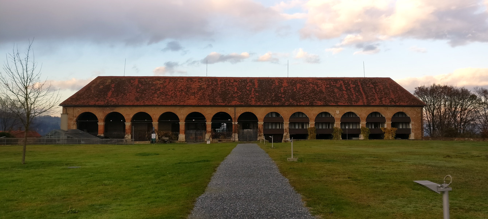
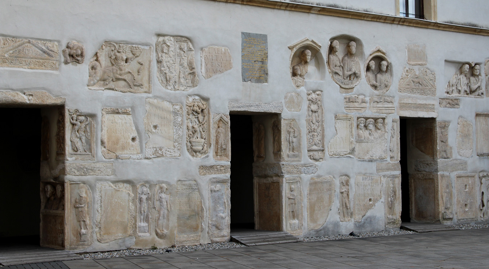

Frühgeschichte
Wie diverse Steinskulpturen und Werke zeigen, reicht die Geschichte rund um das Schloss Seggau bis in die Zeit der Kelten und Römer zurück. Im 12. Jahrhundert erbauten die Salzburger Erzbischöfe das Oberschloss als Missions- und Verwaltungsbastion zur Kolonialisierung der südlichen Steiermark. Ab 1218 wurde es von den Bischöfen von Seckau erweitert. Der Name des Schlosses in der heutigen Schreibung leitet sich von der obersteirischen Abtei Seckau ab, da „Seggau“ eine alternative Schreibweise zu „Seckau“ ist.Mit der Zeit entwickelten sich drei verschiedene, voneinander unabhängige Burgen:
- Die Burg Leibnitz im Besitz der Salzburger Bischöfe, heute erhalten als der romanische Hauptbau
- Die Burg der Bischöfe von Seckau, die etwas tiefer als das Oberschloss liegt
- Das Schloss Polheim, welches insgesamt etwas abseits liegt und als Sitz für Salzburger Ministerialen und Burggrafen diente
Die Seckauer und die Salzburger Burg waren durch eine Mauer getrennt und die Besitzverhältnisse waren kompliziert, da im Gerichtstrakt des Hochschlosses der Amtssitz des Landgerichtes untergebracht war.
Verwüstungen
Nach Verwüstungen der Burgen im Ungarnkrieg 1479 durch Artilleriebeschuss wurden sie nicht von den Osmanen während der Türkenkriege belagert. Daraufhin wurden zum besseren Schutz ein Zwinger und Artilleriebasteien errichtet. Dadurch erhielt der Wirtschaftshof den Status einer Vorburg. 1529 verwüsteten die Türken die Stadt Leibnitz, die Seggauer Burg blieb dabei allerdings verschont.Unter dem Salzburger Erzbischof Wolf Dietrich von Raitenau kamen 1595 alle drei Schlösser in den Besitz des Bistums Seckau. Unter Bischof Martin Brenner wurde daraufhin die Trennmauer abgerissen und eine gemeinsame Außenmauer wurde errichtet. Nach mehreren Umbauten unter Bischof Johann Ernst Graf von Thun im 17. Jahrhundert erhielt das Schloss sein heutiges Aussehen. In dieser Zeit entstanden die Arkaden, die Kapelle, die Fürstenzimmer und der bischöfliche Weinkeller.

Arkaden mit Weinkeller
Umbauten ab 1700
Da 1786 Graz der Hauptsitz der Seckauer Bischöfe geworden war, blieb das Schloss Seggau bis ins 20. Jahrhundert Sommerresidenz der Bischöfe.Im zweiten Obergeschoss des Oberschlosses befinden sich die vier sogenannten Fürstenzimmer. Die zwischen 1742 und 1748 gestalteten Räume dienten als bischöfliche Repräsentationssäle und sind mit nur minimalen Änderungen erhalten. Das ehemalige Speisezimmer im romanischen Turm ist mit Wandvertäfelungen und eingelassenen Bildern von Jakob Zanussi ausgestattet. Thronzimmer und Oratoriumszimmer sind von Darstellungen der 57 Bischöfe der Diözese Graz-Seckau umzogen. Die Fürstenzimmer zählen zu den wichtigsten Kulturdokumenten unseres Landes, die noch in Form und Anordnung die typische barocke Bildergalerie zeigen und damit einen Einblick in die barock-herrschaftliche Welt von Adeligen und Bischöfen geben.
In der Zeit von 1816 bis 1830 wurde der alte Turm abgetragen, wobei zahlreiche Grabsteine und Reliefs aus der Römerzeit gefunden und durch Kaspar Harb katalogisiert wurden. Zwischen 1828 und 1932 wurden die Römersteine unter Bischof Roman Zängerle zusammengestellt und an der heutigen Stelle eingemauert. 1956 bis 1967 wurde unter Bischof Dr. Josef Schoiswohl das Wirtschaftsgebäude zu einem Bildungszentrum umgestaltet. 
Eingemauerte Steinwerke
Neubau
Zwischen 1999 und 2009 wurde das Schloss um einen Neubau erweitert. Diese Räumlichkeiten sind hauptsächlich Teil des Hotels und werden von Gästen benutzt. Beim Neubau handelt es sich um eine Stahlkonstruktion, die bereits 1994 entworfen wurde und damals als sehr futuristisch galt.Neubau